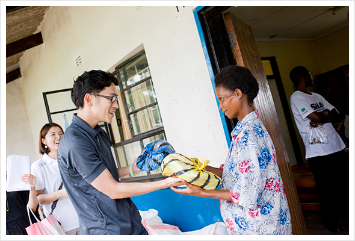
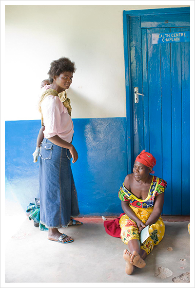
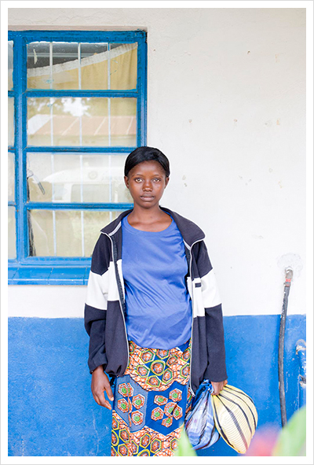
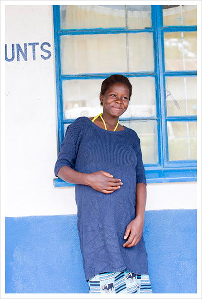
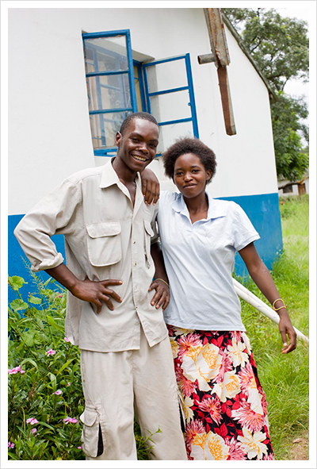
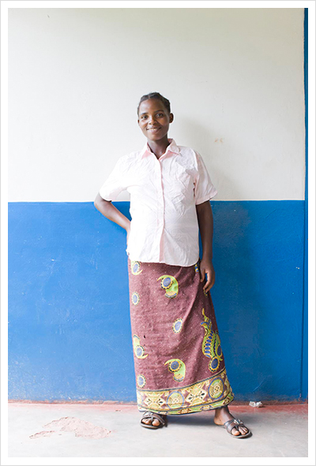
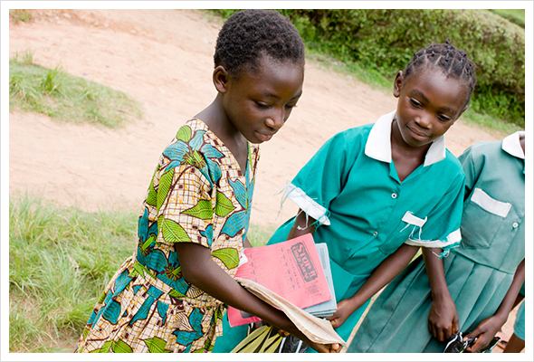
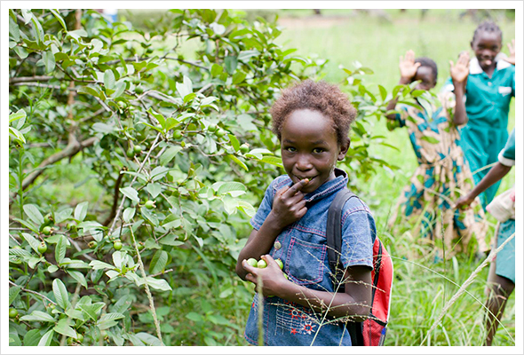
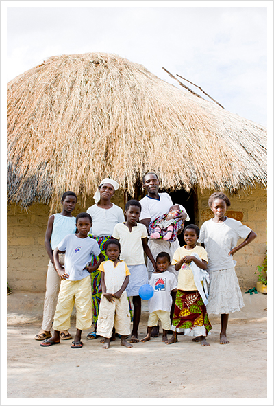
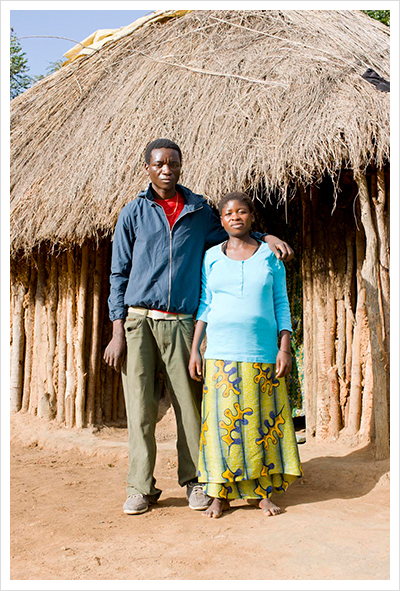

- 
- 11.
- フィワレ診療所に到着。衣服提供の旅に初めて同行した広報の長谷さんから、診療所に着ていた妊産婦さんに衣服を寄贈する。病院で出産することがまだまだ定着していないこの地域で、服が通院の１つのきっかけになる。
- 
- 12.
- 診療を待つ女性。JOICEPは、1968年に設立されたNGOで、日本の戦後の母子保健活動の経験を活かして、世界各地で母子保健活動の推進を行っている。今回訪れた地域に住むベンバ族の人々は、かつての日本人と似ているところが多いという。シャイで、コミュニティの意識が強い。近所の人々の目を気にして、思っていても行動できなかったり、逆に見栄をはったり。ハレの日はおしゃれをしたいと考えるところも日本人と同じ。似ているからこそ、かつて日本で行われた母子保健活動の経験が生きてくる。
- 
- 13.
- 受け取ったユニクロの服を持つ妊産婦。診療所を作っても、そこに妊産婦が来なければ意味をなさない。だからここでは、妊産婦が病院に行くという習慣をつけようと様々な努力がなされていた。例えば、日本にもあった母子保健員制度を取り入れて、保健員が地域を廻るという活動。今回始まる服の配布も大きな期待が寄せられていた。
- 
- 14.
- ユニクロの服をきてポーズ。彼女の名前はノラ。17歳。はじめての出産。朝6時におけて3時間かけて診療所まできたという。夫は農業をしていて、夫の家族と一緒に暮らしている。彼女が着ていた黄色のタンクトップが素敵ですねとの問い対し、「これは夫がローカルマーケットで買ってくれたの」とうれしそうに話していた。
- 
- 15.
- ダンバ夫妻。（アンドリュー：22才、リーズ：20才）あまり夫が一緒に定期健診に来ることは多くない中、仲睦ましく彼らは夫婦一緒に検診にきていた。現在妊娠4ヶ月ではじめての出産。子ども服と自分の服までもらえてとてもうれしいと喜び、早速ユニクロのポロシャツを着てくれた。
- 
- 16.
- リステタム、21才。去年の9月結婚したばかりの新婚さん。現在妊娠4ヶ月。彼女のワードローブは3枚のシャツに5枚のチテンゲ（ザンビアの伝統布）。決して服はたくさん持っていないけど、ザンビアの女性は伝統布のチテンゲとカジュアル衣料を組みあわせて着こなすのが上手だ。受け取ったばかりのユニクロの服の中からピンクのシャツを早速着用してくれた。
- 
- 17.
- 診療所の外には子どもたちも集まっていた。みんなシャイだけど、とても人なつこい。学校帰りということで見せてくれた教科書には、「stop child abuse（児童搾取をやめよう）」と書かれていた。かつての統治国がイギリスだったため、ザンビアの公用語は英語。
- 
- 18.
- 木の実を食べる子ども。多くの人は、朝ご飯にトウモロコシから作られた団子状のシマという食べ物を食べる。そして、３時くらいに再びシマ、野菜、芋虫。１日２食が一般的な食生活らしい。
- 
- 19.
- フィアレから車で１時間くらいのところに住む一家を訪問。10人家族。パパ、ママ、８人の子ども。日本ではテレビ番組になってしまいそうな大家族だけれど、こちらではごくごく普通の人数。届けたユニクロの服を着て、家の前でポーズ。
- 
- 20.
- 初めての赤ちゃんを楽しみに待っている夫婦。年収1万円ほどしかない収入の中から、他の出費をおさえて乳幼児の服やブランケットなど合計800円かけて生まれてくる子どものために準備をしていた。これもPPAZの保健推進員の指導によるもの。